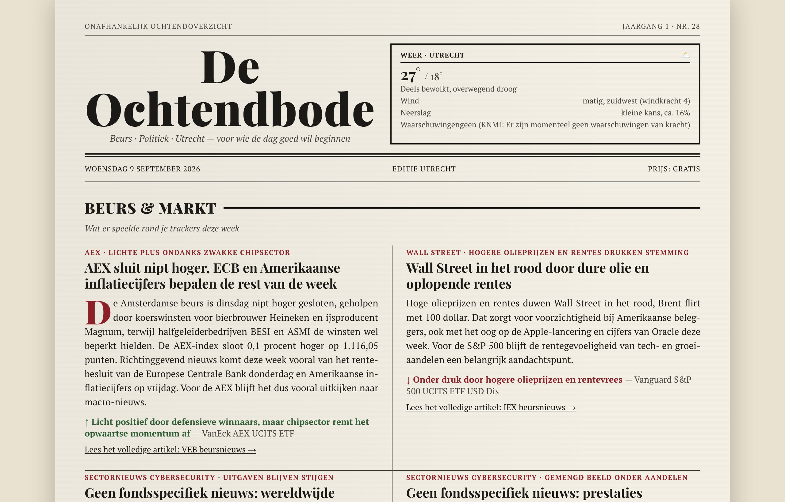
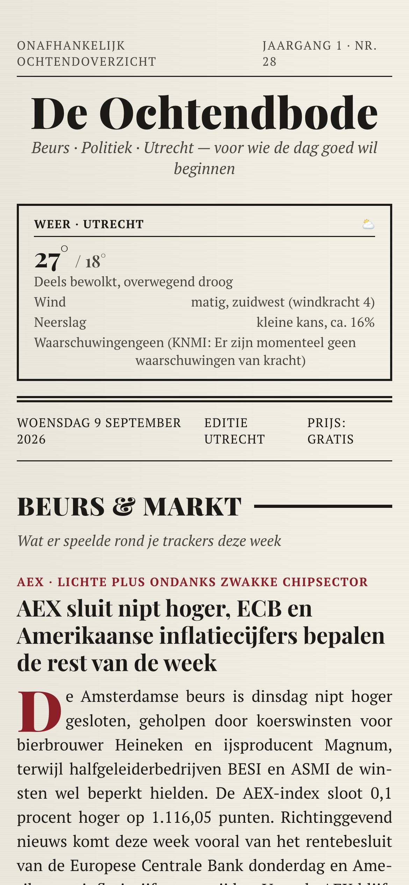
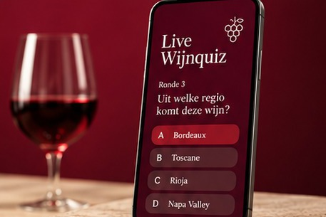
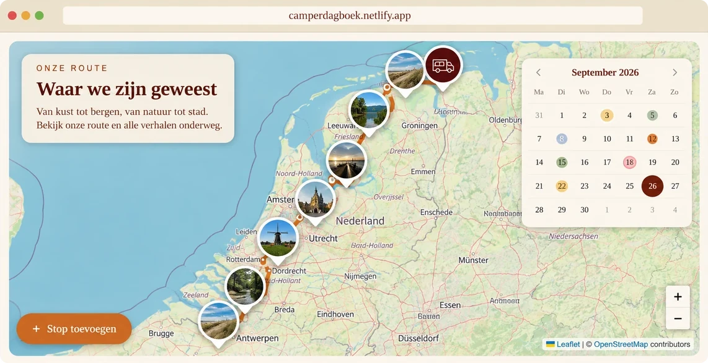
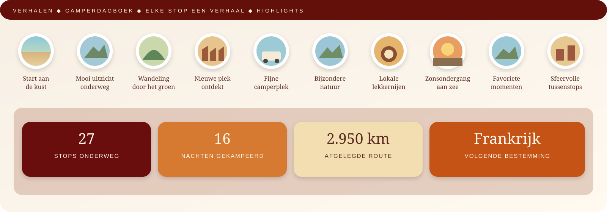
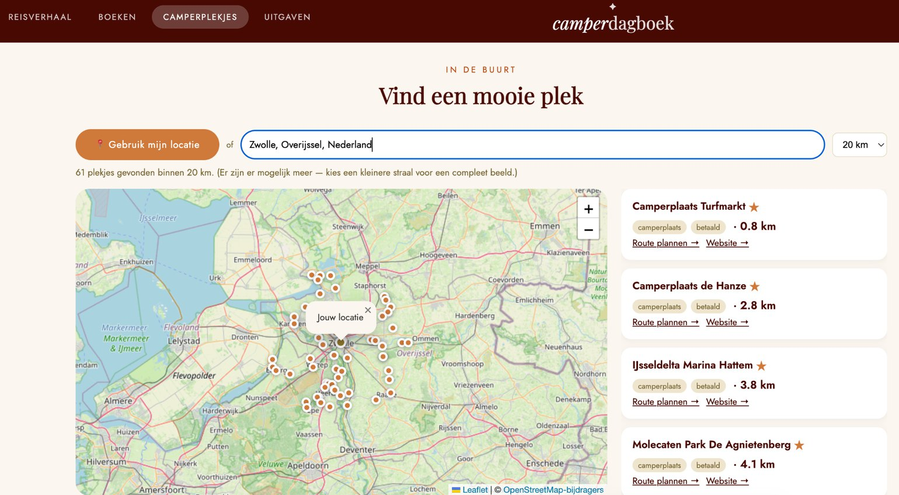
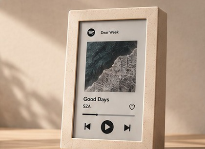

Over mij
Bedenken én realiseren
Mijn kracht zit in de ruimte tussen idee en uitvoering. Ik ben gewend complexe digitale trajecten te organiseren, maar krijg juist energie van het moment daarvoor: begrijpen wat er écht nodig is, keuzes maken en een concept tastbaar krijgen.
- In mijn werk
- Ik stuur multidisciplinaire teams, verbind business en techniek en zorg dat scope, prioriteiten en besluitvorming helder blijven tot en met de oplevering.
- In mijn eigen projecten
- Ik onderzoek productideeën door ze te bouwen. AI gebruik ik als versneller voor research, prototyping en development — niet als eindproduct op zich.
- Waar die werelden samenkomen
- Ik zoek rollen waarin ik een kans of probleem scherp krijg, een digitale oplossing vormgeef en genoeg eigenaarschap neem om die ook echt de wereld in te krijgen.
- Digitale innovatie
- AI
- Creatieve technologie
- Productontwikkeling
Ochtendkrant · elke nacht automatisch
De Ochtendbode
Van versnipperde ochtendinformatie naar één product dat zichzelf iedere nacht vernieuwt.


- Vraagstuk
- Nieuws, markten, weer en lokale tips kwamen uit verschillende bronnen. Het probleem was niet een gebrek aan informatie, maar selectie: wat wil je ’s ochtends in één oogopslag weten?
- Productkeuze
- Ik ontwierp één persoonlijke digitale krant met vaste rubrieken, duidelijke prioriteit per type informatie en een eigen redactionele stijl.
- Bouw & iteratie
- Ik bouwde een geautomatiseerde publicatieflow waarin een AI-model bronnen doorzoekt, relevantie beoordeelt, content schrijft en via GitHub Actions een nieuwe editie publiceert. Daarna schaafde ik op basis van dagelijks gebruik aan selectiecriteria, volgorde en toon.
- Resultaat
- Een werkend product dat zelfstandig iedere nacht een nieuwe editie maakt en dat ik daadwerkelijk als ochtendstart gebruik.
- Productconcept
- Informatiearchitectuur
- AI-workflow
- Automatisering
- Tech
- Claude Code · Python · AI-model met webzoekfunctie · GitHub Actions
Groepsspel · live op je telefoon
Live Wijnquiz
Een digitale laag die een live wijnproeverij spannender maakt zonder de tafel uit elkaar te trekken.

- Vraagstuk
- Iedereen op zijn eigen telefoon laten spelen is makkelijk; zorgen dat het spel de gezamenlijke ervaring versterkt is moeilijker.
- Productkeuze
- Een multiplayer-quiz met individuele input, gezamenlijke rondes en live tussenstanden. De telefoon is het bedieningsmiddel; de ervaring blijft aan tafel.
- Bouw & iteratie
- Ik ontwierp de flow rond het tempo van de proeverij: antwoorden, reveal, score en door naar de volgende wijn. Realtime feedback en centrale resultaten houden de groep synchroon zonder het gesprek stil te leggen.
- Resultaat
- Gebruikt tijdens een echte proeverij; de digitale laag voegde competitie toe zonder de gezamenlijke ervaring over te nemen.
- Interaction design
- Game mechanics
- Realtime UX
- Prototype in gebruik
- Tech
- AI-assisted rapid prototyping · realtime webapp
Familie-app · in gebruik
Camperdagboek
Een gedeelde camper beheren én de reizen eromheen bewaren in één product.
- 35 stops onderweg
- 93 nachten geboekt
- Vraagstuk
- Bij gedeeld gebruik zijn beschikbaarheid en boekingen essentieel, maar een kale agenda doet niets met de waarde van alle reizen die met dezelfde camper worden gemaakt.
- Productkeuze
- Ik combineerde planning, route, reisupdates, camperplekken en gedeelde uitgaven in één app. Zo ondersteunt het product zowel het praktische beheer als het gezamenlijke reisverhaal.
- Bouw & iteratie
- Ik testte de belangrijkste flows met de daadwerkelijke gebruikers en paste het product daarop aan. Coördinaten invoeren bleek bijvoorbeeld onwerkbaar, dus verving ik dat door zoeken op plaatsnaam. Later kwamen gedeelde uitgaven en toegang met goedkeuring erbij.
- Resultaat
- Een product dat binnen de familie daadwerkelijk wordt gebruikt, inmiddels met 35 stops en 93 geboekte nachten.
- Productconcept
- UX-flows
- Gebruikerstesten
- Iteratieve ontwikkeling
- Tech
- Claude Code · Supabase · Leaflet/OpenStreetMap · Netlify



Hardware · e-paper
E-paper Spotify
Streamingmuziek zichtbaar maken zonder nóg een scherm dat om aandacht vraagt.

- Vraagstuk
- Streaming maakt muziek praktisch onzichtbaar. Ik wilde de visuele aanwezigheid van een album terugbrengen, maar zonder een fel display aan de muur.
- Productkeuze
- Een e-paper object dat actuele trackinformatie en artwork toont. Het scherm verbruikt weinig energie, geeft geen licht en past daardoor beter in een interieur dan een traditioneel display.
- Bouw & iteratie
- Ik koppelde ESP32, Spotify API en e-paper en werkte iteratief aan authenticatie, refresh-logica, partial refresh en informatiehiërarchie. Het draait inmiddels als fysiek e-paper-scherm; als laatste stap krijgt het een plek in een fotolijst.
- Resultaat
- Een werkend physical-digital prototype waarin software, hardware en vormgeving als één product samenkomen.
- Prototyping
- API-integratie
- Information design
- Hardware × software
- Tech
- ESP32 · Spotify API · e-paper · Arduino/C++ · AI-assisted development